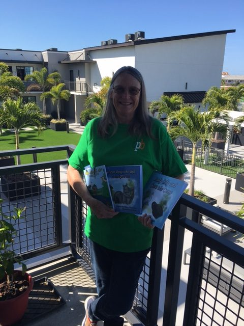

Club Service
Keeping our club strong and welcoming. Fellowship, mentoring new members, and running the weekly meetings that hold everything together.
Rotary organizes its work around the Avenues of Service. They are a simple way to make sure we are serving our club, our vocations, our community, the world, and the next generation.
Keeping our club strong and welcoming. Fellowship, mentoring new members, and running the weekly meetings that hold everything together.
Using our jobs and skills to do good, and holding our work to the Four-Way Test. We honor the everyday professionals who keep our community going.
The hands-on local work. Food drives, reading benches, shred events, clinics, and shelters in Oldsmar and the East Lake area.
Reaching beyond our borders. We support Rotary's worldwide work on polio, clean water, health, and peace.
Investing in the next generation through literacy programs, reading benches, scholarships, and youth leadership.
Whatever you care about, there is a place for it here. Come tell us what matters to you.
Visit a MeetingAcross the globe, Rotary concentrates its energy on seven goals. Our local projects connect to these bigger causes.
Building understanding and helping communities resolve conflict.
Ending polio and improving health where care is hard to reach.
Safe water, sanitation, and hygiene for every community.
Helping families get the care they need to stay healthy.
Reading benches, books, and programs that help kids learn.
Growing local economies and protecting the world around us.

Education and literacy is not an abstract goal for us. It is a reading bench at Kings Highway Elementary, a basket of books at Chi Chi Rodriguez Academy, and a free reading program any local family can use.
Fighting disease shows up as a shred event on World Polio Day. Community service shows up as a Habitat build and food for the Oldsmar Cares pantry. The big causes start with small, steady local work.
See our projects & eventsThere is a project with your name on it. Come find it.